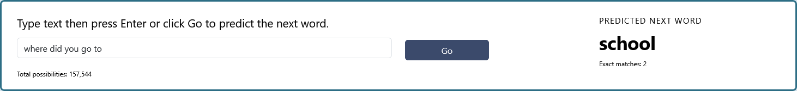
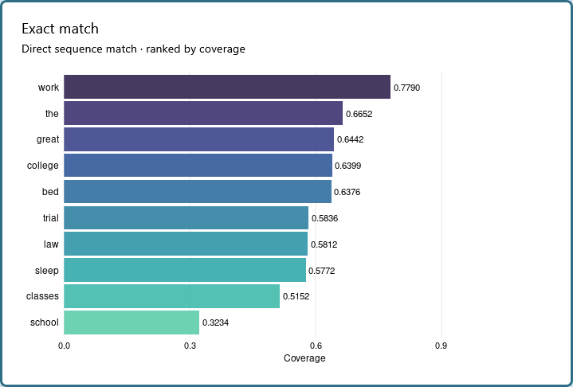
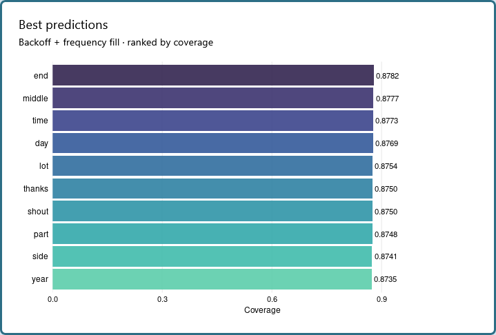

An NLP Pipeline from N-Gram Models to Deployed Shiny App to Predict the Next Word in a Sentence
Executive Summary
Rationale: The goal was to build a Shiny app that predicts the next word from user text input using natural language processing (NLP) techniques. The corpus used for training is the SwiftKey dataset, a large English-language collection of blogs, news articles, and tweets totalling approximately 200MB and 70 million words across three sources. Multiple modeling approaches were explored across four R packages — tidytext, quanteda, text2vec, and word2vec — including Stupid Backoff, MLE, interpolated backoff, Kneser-Ney smoothing, and Good-Turing smoothing. Stupid Backoff was the best performing model in 2021 and 2026. The 2026 app version uses an improved Stupid Backoff model built on pentagrams drawn from a 70% stratified sample of the corpus.
App Highlights
- Accepts user text input and predicts the next word using a windowed pentagram lookup with systematic backoff — searches all valid sequence positions across word1–word5, dropping the first word when matches are exhausted
- At the exact sequence level, allows up to 3 high-coverage stop words (e.g., of, a, the, not) alongside content word predictions (e.g., noun, verb, adjective, adverb) to capture natural completions while avoiding returning stop word heavy predictions.
- POS tag caching — uses udpipe to tag words by parts of speed and stores in session cache to improve response speed
- In addition to best prediction, there are two displays panels that each search the corpus for the exact input text, backing off to smaller ngrams if not found: Exact Match: if the input appears in the corpus, returns all results ranked by coverage (including best prediction); if no sequence match is found at any backoff level, searches for the last content word in input across pentagrams word1–word4, filters by coverage ≥ 0.50, and selects top word5. Best Predictions (fallback): filters results to nouns, proper nouns, and adjectives, then backfills with high-coverage unigrams from the pentagram pool when fewer than 10 POS-filtered results are found.
- Supports both Go button and Enter key to trigger predictions; clears panels on new input
- Built on a 70% stratified sample pentagram corpus (~157,500 rows) derived from news, blog, and Twitter text
The SwiftKey corpus used to train this model is not included in the repository due to licensing.
App Features
Next Word Prediction
The app accepts a text string from the user and returns a predicted next word (Figure 1). Input is cleaned to lowercase, with apostrophes normalized and possessives removed before matching. Any input over 4 words uses only the last 4 words for the corpus search. The corpus search starts with max of four ngrams and then backs off to smaller ngrams if a match is not found. The predicted word is the first content word (noun, verb, adjective, adverb, or pronoun) from the Exact Match results ranked by coverage, selected via udpipe POS tagging. Up to 3 high-coverage stop words (quanteda stop word list) are permitted in the results but are skipped when selecting the predicted word. Up to 3 high-coverage stop words (quanteda stop word list) are permitted in the results, so the predicted word may occasionally be a stop word when it is the most probable continuation of the input. If no content word is found, the highest-coverage match from Best Predictions is returned. Total possibilities (pentagram corpus size) and exact match count are displayed as footnotes in the top panel.
Figure 1. App interface showing user input and predicted next word.

Interpretation: The top panel shows the user input field, Go button, and predicted next word. Total possibilities and exact match count appear below as context for the prediction.
Exact Match Panel
The Exact Match panel (Figure 2) displays corpus sequence matches ranked by coverage using a sliding window search followed by a backoff if needed–a contextual prediction. Either full input text or the last four words of text 5+ words in length searches in sliding windows across word1–word4 for a match. If a match is found, the predicted word is the column immediately following the last matched word (for four words, Word5 in pentagrams is a match). Up to 3 high-coverage stop words are allowed alongside content words, enabling natural predictions like “not” following “he did.” If there are not ten exact matches to full input sequence, the stupid backoff is triggered. The backoff filters stop words and drops the first input word to search for a match, dropping input words until all options are exhausted. Numerics and input words are excluded from all predictions.
Figure 2. Exact Match panel showing corpus sequence predictions for “where did you go to”.

Interpretation: Bars represent predictions ranked by coverage (cumulative corpus frequency). Stop words may appear among the top predictions when they are the most probable continuations of the input sequence. This panel provides the most accurate matche for the user.
Best Predictions Panel
The Best Predictions panel (Figure 3) offers predictions using high-coverage unigrams with POS tagging as drawn from all five pentagram word columns and provides fallback options for the user if the predicted words were incorrect–a frequency-based approach. The use of POS tagging is designed to surface the most grammatically appropriate and content-rich predictions even if selecting by corpus frequency.
Figure 3. Best Predictions panel using POS-tagging and frequency to find a prediction for “where did you go to”.

Interpretation: Bars represent POS-filtered predictions based on POS and frequency (high-coverage unigrams in the pentagram pool). This panel complements the Exact Match panel by providing additional predictions should the output not meet user expectations.
Study Design
The original project (2021) was a capstone assignment for the Johns Hopkins Data Science Specialization on Coursera. Coming to NLP with no prior exposure, I independently learned and implemented multiple modeling approaches in R over six weeks — with no instruction on accuracy testing, I designed and built the evaluation framework from scratch. In 2026 I decided to revamp the original app using improved tools.
Corpus
The SwiftKey dataset contains English-language text from three sources. Table 1 summarizes the corpus. Text was cleaned by removing punctuation (except apostrophes), digits, URLs, and profanity using the lexicon::profanity_alvarez list. In 2021, I experimented with removing stop words but the UX was poor and I reverted to including them.
Table 1. SwiftKey Corpus Summary
| Source | File Size (MB) | Lines | Words | Mean Words per Line |
|---|---|---|---|---|
| Blogs | 200.4 | 899,288 | 38,154,238 | 42.4 |
| News | 196.3 | 77,259 | 2,693,898 | 34.9 |
| 159.4 | 2,360,148 | 30,218,166 | 12.8 | |
| Pooled | 556.1 | 3,336,695 | 71,066,302 | 21.3 |
Model Development
Building the n-gram lookup tables required substantial iterative work spanning June-July 2021. In addition to early exploration of topic-based prediction using Latent Dirichlet Allocation (LDA), other approaches were explored and deemed inappropriate. The two main ones were:
Text2Vec Model. GloVe Word Embeddings and Collocation: GloVe is a semantic similarity approach that represents words as dense vectors based on co-occurrence statistics, capturing semantic relationships rather than word sequences. The advantage is rich semantic representation — words with similar meanings cluster in vector space. The limitation is fundamental to the architecture: GloVe is not a sequence model and cannot predict the next word in a sentence without additional architecture. A term co-occurrence matrix was built from a 40% sample using a skip-gram window of 5, and GloVe was fitted with rank 50 over 10 iterations. The classic Paris-France-Germany analogy test confirmed the embeddings captured semantic relationships. A collocation variant with a different vector arithmetic test was also attempted. Both variants were abandoned as unsuitable for the sequence prediction task.
Word2Vec Model. CBOW and Skipgram: Word2Vec produces dense word embeddings that capture semantic relationships in both continuous bag-of-words and skipgram variants. Like GloVe, the strength is semantic representation — the embeddings reflect meaningful word relationships. The limitation is the same: Word2Vec is not a sequence model, and nearest-neighbor predictions using cosine similarity produce semantically related words rather than contextually likely next words. Both CBOW and skipgram models were trained on the 50% training split. Both were abandoned as unsuitable for sequence prediction.
Forty percent of each SwiftKey dataset was subsampled and then combined into a single corpus for 2021 development. Quanteda and tidytext were used for corpus processing and trimming (filter by count or coverage). App data were generated with and without stopwords. Trimming by coverage and retaining stopwords resulted in better UX and the final implementations were tested for accuracy to assess whether the top-1 predicted word matched the target word using quadgram data as the test set. Stupid Backoff achieved 14.21% top-1 accuracy when predicting the exact word, not probable matches. Updated versions of original scripts for quanteda and tidytext have been consolidated and updated but any original bugs retained with annotations. These are shared in artifacts/.
The 2026 project revisited the 2021 findings updating the approaches and introducing a new accuracy framework. An interpolated approach was added and prior attempts at MLE were debugged. Fifty percent of the individual source files were sampled then joined (the 2021 project sampled 40%). An additional 10% was subsampled from each source dataset to use as a test set for accuracy testing. The accuracy metric was expanded to top-10 and part-of-speech (POS) accuracy via udpipe. New accuracy metrics thus evaluated whether the correct word appeared in the top 10 candidates and whether the predicted word was grammatically appropriate.
Tidytext Stupid Backoff and Interpolated Backoff performed nearly equally, but the interpolated model consistently favored specific high-frequency words, resulting in poor UX. Stupid Backoff was confirmed as the final model.
Models: Methods and Implementations
tidytext Models. Stupid Backoff (2021 and 2026 winner): Stupid Backoff matches the input against the highest-order ngram available, backs off through lower orders if no match is found, and falls back to top unigrams as a last resort. No smoothing is applied — relative frequencies are used directly. The approach is simple, fast, and reliable, making it well suited to a Shiny deployment with memory and speed constraints. The primary limitation is that it assigns no probability to unseen ngrams and applies no discounting to redistribute probability mass. The tidytext implementation used unnest_tokens, filters (rare ngrams, 80% cumulative coverage, dictionary matches), and separated word columns keyed for fast lookup.
Maximum Likelihood Estimation (MLE): MLE computes the probability of a word given its preceding context as a relative frequency — the count of the ngram divided by the count of the preceding context. No smoothing or discounting is applied. MLE is transparent, fast, and easy to implement. The primary limitation is brittleness on unseen ngrams: any input absent from the training data returns zero probability with no recovery beyond dropping to a lower ngram order. The tidytext implementation followed the same pipeline as Stupid Backoff — unnest_tokens, 90% coverage filter, separated word columns — with probability computed as n divided by the sum of n within each preceding context group.
Interpolated Backoff: Interpolated backoff combines probability estimates across all ngram levels rather than committing to the highest-order match and backing off only on failure. The final probability for a predicted word is a weighted sum of its quadgram, trigram, bigram, and unigram probabilities, with lambda weights that sum to one. This smooths over sparse data at higher ngram levels by always incorporating lower-order evidence, making it more robust than Stupid Backoff or MLE when training data is sparse. The cost is additional computation relative to the simpler approaches. The tidytext implementation used the same 90% coverage-filtered ngram data, computing interpolated probabilities across all four levels and returning the top candidates by combined score.
Quanteda Models Simple MLE Backoff: Maximum likelihood estimation with a simple backoff strategy — match the longest possible ngram, back off to shorter ngrams if no match is found, return nothing if all levels fail. MLE is simple, fast, and interpretable. The limitation is zero probability for unseen ngrams with no smoothing to redistribute probability mass. The quanteda tokenization pipeline was used to build document-feature matrices from the training data with dfm_trim applied to reduce sparsity. The script was abandoned after data preparation — no model code was written. The decision was made to move directly to more sophisticated smoothing methods rather than reimplement MLE in a second framework.
Kneser-Ney Smoothing: Kneser-Ney smoothing computes continuation probabilities — the likelihood of a word appearing in a novel context — rather than raw frequency. This makes it theoretically superior to MLE and Stupid Backoff for handling unseen ngrams, particularly for lower-order models. The standard Kneser-Ney formula with a discount value of 0.75 was implemented using a quanteda DFM pipeline. The model produced mathematically sound probability estimates but failed in practice due to an incompatibility between quanteda’s underscore separator in its internal token representation and the space-separated format required by the prediction functions. Errors in the backoff and binding functions prevented successful deployment.
Good-Turing Smoothing with Katz Backoff: Good-Turing smoothing re-estimates the probability of unseen ngrams by reallocating probability mass from observed ngrams based on the frequency of frequencies. Combined with Katz backoff, which applies an alpha normalization factor, the approach is theoretically well suited to handling sparse data and novel word sequences. The implementation built a quanteda DFM pipeline, fitted log-linear regression models to estimate smoothed counts, and implemented the full Katz backoff chain from trigrams through unigrams. The July iteration produced output but returned only the same five words for any input — a symptom of the alpha normalization factor collapsing to a constant, likely caused by the quanteda underscore separator issue. Multiple iterations (originally labeled model3, 4a, and 4b) were attempted with minor data preparation differences; none resolved the core issue.
A note on transformer and LSTM approaches: Contextual language models such as GPT-2 and BERT existed in 2021 and would in principle address the semantic limitations of ngram approaches. However, practical access in R was limited: the keras and tensorflow packages provided an R interface to LSTM sequence models, and this was explored, but the implementation complexity for a sequence model on a 70-million-word corpus was out of scope for a capstone assignment. HuggingFace transformer inference in R was experimental at the time and not production-ready. The text package, which now wraps HuggingFace models cleanly, was in early development. The ngram approach was the correct practical choice given the assignment constraints and the R ecosystem in 2021. The semantic ceiling of the deployed app — predicting grammatically plausible but not always contextually precise words — is an inherent limitation of frequency-based ngram models rather than a failure of implementation.
App Data Pipeline
The 2026 app uses a separate data pipeline from the model development scripts. Model development used lower-order ngrams (unigrams through quadgrams) but found that pentagrams alone, with the windowed backoff search across all five positions, provided sufficient coverage without the overhead of maintaining multiple lookup tables, which slowed UX response and exceeded Shiny file size allowances.
The cleaned corpus was subsampled at five levels — 30%, 40%, 50%, 60%, and 70% — stratified by source to preserve representation across blogs, news, and Twitter. Each sample was used to generate a pentagram file to test the relationship between corpus size, ngram coverage, and file size. Pentagrams were filtered to a minimum count of 5 occurrences, trimmed to 80% cumulative coverage, and split into five word columns (word1–word5). Each word was then validated against a hunspell English dictionary to remove non-English tokens. The resulting file was indexed for fast lookup.
Due to the small pentagram file size, the full corpus was also tested. After applying frequency and coverage filters, the resulting pentagram file for the full corpus was the same size as the 70% sample, suggesting the filters effectively cap the vocabulary regardless of corpus size. The 70% sample was selected as the final corpus, yielding approximately 157,500 pentagram rows at 3.2MB — small enough for fast Shiny loading while capturing effectively full corpus coverage.
Testing Model Accuracy 2026
The accuracy testing methods in 2021 were for exact prediction. In 2026, top-10 and POS were used. The values do not reflect genuine gain in model performance.
Three tidytext variants were tested — MLE backoff, Stupid Backoff, and interpolated backoff — alongside the quanteda, text2vec, and word2vec implementations. Accuracy was evaluated using two measures: top-10 prediction accuracy and POS to assess whether the top-1 predicted word matched the part-of-speech of the target word via udpipe. Table 2 summarizes accuracy across all models. All three tidytext models dominate on both metrics. Stupid Backoff ranks highest on top-10 accuracy and is tied with MLE for POS accuracy — but POS accuracy tended to be above 50% in all models except Quanteda Kneser-Ney. Kneser-Ney’s POS accuracy (37.3%) notably exceeds its top-10 accuracy (9%), indicating it predicts the right kind of word even when missing the exact word. Tidytext Stupid Backoff is confirmed as the final model — consistent with the original 2021 finding.
Table 2. Model Accuracy — Ranked by Top-10 Values
| Framework | Model | Top-10 Accuracy | POS Accuracy |
|---|---|---|---|
| tidytext | Stupid Backoff | 50.8% | 56.7% |
| tidytext | MLE | 48.6% | 56.9% |
| tidytext | Interpolated | 46.7% | 54.5% |
| quanteda | MLE | 47.7% | 55.4% |
| quanteda | Good-Turing | 26.8% | 51.5% |
| quanteda | Kneser-Ney | 6.4% | 41.3% |
Project Resources
Repository: kchoover14/nlp-next-word-prediction
Live App: Next Word Prediction App
Data:
data/corpus-sample*.csv– stratified corpus samples at 30%, 40%, 50%, 60%, 70% used for app developmentdata/corpus-train.rdsanddata/corpus-test.rds– 50% train and 10% test splits used for model accuracy testingapp/pentagrams.csv– final 70% pentagram lookup table used by the deployed app
Data can be generated using the scripts. File sizes are too large to share on github.
Code:
App data pipeline — run in order:
prep-app-corpus.R– corpus cleaning and stratified sampling pipeline (30%–70%)prep-app-ngrams.R– pentagram generation, filtering, hunspell validation, and indexing
Model development prep scripts — run before corresponding model scripts. All use stop words retained and 50/10 train/test split at line level:
scripts/prep-corpus-sample.R– corpus sampling and cleaning pipelinescripts/prep-r1-tidytext.R– tidytext corpus pipelinescripts/prep-r1-quanteda.R– quanteda corpus pipeline
Model scripts — r1 (current):
scripts/model-r1-tidytext-stupid.R– Stupid Backoff; top-10 and POS accuracy on r1 test datascripts/model-r1-tidytext-mle.R– MLE backoff; top-10 and POS accuracy on r1 test datascripts/model-r1-tidytext-interpolated.R– Interpolated backoff; top-10 and POS accuracy on r1 test datascripts/model-r1-quanteda-mle.R– quanteda MLE backoff; top-10 and POS accuracy on r1 test datascripts/model-r1-quanteda-good-turing.R– Good-Turing + Katz backoff; top-10 and POS accuracy on r1 test datascripts/model-r1-quanteda-kneser-ney.R– Kneser-Ney smoothing; top-10 and POS accuracy on r1 test dataapp/app.R– deployed Shiny app
Project Artifacts:
2021 original app and data:
artifacts/2021-app.R– original deployed Shiny appartifacts/2021-*.csv– original ngram lookup tables (bigrams, trigrams, quadgrams, unigrams)artifacts/original-base-list-of-bad-words_csv-file_2021_01_18.csv– profanity list used in corpus prepartifacts/original-model-tidytext.R– tidytext Stupid Backoff r2artifacts/original-model-quanteda-mle.R– quanteda MLE r2artifacts/original-model-quanteda-kneser-ney.R– quanteda Kneser-Ney r2artifacts/original-model-quanteda-good-turing.R– quanteda Good-Turing + Katz r2
Environment:
renv.lockandrenv/– restore withrenv::restore()
License:
- Code and scripts © Kara C. Hoover, licensed under the MIT License.
- Data, figures, and written content © Kara C. Hoover, licensed under CC BY-NC-SA 4.0.
Tools & Technologies
Languages: R
Tools: Shiny | shinyapps.io
Packages: shiny | shinycssloaders | bslib | stringr | dplyr | tidyr | data.table | tidytext | quanteda | lexicon | hunspell | viridis | udpipe
Expertise
Domain Expertise: natural language processing | n-gram language models | text mining | corpus linguistics | predictive modeling | interactive tool development
Transferable Expertise: Demonstrates ability to systematically explore and evaluate competing methodological approaches, document iterative development transparently, and deploy a working NLP application from a messy real-world corpus — skills directly applicable to any data pipeline or applied ML project requiring both technical rigor and honest documentation of what worked and what did not.